01
對外的門面
網站、電商與台灣金流、線上預約，以及 LINE 與 WhatsApp 上的客服代理。
Walking Whale Design System
每個元件都從 components 與 patterns 目錄裡的範例檔直接渲染，中英並排。範例本身通過輸出驗證器：只用系統的 class，沒有 style 屬性，也沒有自訂顏色。
components/layout排版骨架：容器、區塊、垂直與水平排列、格線、兩欄。每一頁都會用到
zh-Hant
01
三欄，960px 以下兩欄，640px 以下一欄。
02
欄距固定為 space.5。
03
不需要寫任何 CSS。
左欄較寬，適合正文；右欄放補充資訊。860px 以下改為上下排列。
右欄：補充資訊、側欄、聯絡方式。
en
01
Three columns, two below 960px, one below 640px.
02
The gap is always space.5.
03
No CSS required.
The wider start column holds running text; the end column holds supporting facts. Below 860px they stack.
End column: notes, sidebar, contact details.
components/type文字角色：hero 標題、導言、內文、介面文字、說明、等寬字，以及 Abyss 底的反白
zh-Hant
區塊標籤
先與人同行，再著手系統
ww-lede：標題下方的導言，一到兩句。
ww-body：一般內文，Source Serif 4 與思源宋體。
ww-ui：介面文字，Inter 與思源黑體。
ww-sm：說明與中繼資料。
ww-label：表單與表格的標籤
ww-mono: No. 01 · 2026-10-07 · 03 / 07
Abyss 底
導言與說明文字使用 Surface 色。
en
Kicker
We work with people before we work on systems
ww-lede: the standfirst under a headline, one or two sentences.
ww-body: running text in Source Serif 4.
ww-ui: interface text in Inter.
ww-sm: captions and metadata.
ww-label: form and table labels
ww-mono: No. 01 · 2026-10-07 · 03 / 07
On Abyss
Ledes and captions use Surface.
components/logo放標誌：topbar、頁尾、封面
zh-Hant



en



components/kicker區塊標題上方的短標籤，可加 No. 01 編號
zh-Hant
我們做什麼
No. 02我們怎麼開始
No. 03下一個合作
en
What we do
No. 02How we begin
No. 03Working together
components/rule-accent標題與導言之間的 38×4 短線
zh-Hant
筆記
第一次見面，我們幾乎不談技術。
en
Notes
At a first meeting, we barely talk about technology.
components/motion五種動態模式：浮現上升、水平展開、依序浮現、即時回應、不動。一頁只在需要時使用
zh-Hant
ww-rise
ww-stagger
01
卡片依序浮現，間隔 80ms。
02
第二張。
03
第三張。
ww-reveal
03 / 05
錯誤、警示與通知一律直接出現，不加動態。使用者開啟減少動態時，所有內容直接顯示。
en
ww-rise
ww-stagger
01
Cards surface one after another, 80ms apart.
02
The second.
03
The third.
ww-reveal
03 / 05
Errors, warnings and toasts always appear without motion. With reduced motion on, everything is shown at once.
components/layers招牌元素。只用於步驟進度、頁碼、閱讀進度、時間軸，一定搭配文字
zh-Hant
03 / 07使用者與情境
07 / 18
45%
20232026合作第 4 年
en
03 / 07Users and context
45%
20232026Year 4 of working together
components/button動作與導覽：四種按鈕、文字連結、圖示
zh-Hant
內文中的文字連結使用 accent 色並加底線。
閱讀完整案例en
A text link in running text uses the accent color and an underline.
Read the full casecomponents/card可引用的單位：服務、功能、文章，放在格線裡
zh-Hant
01
網站、電商與台灣金流、線上預約，以及 LINE 與 WhatsApp 上的客服代理。
02
會員、薪資結算、審核流程與權限。整張卡片都可以點。
03
在您自己的 GPU 上執行的辨識與檢索，資料不離開公司網路。
en
01
Websites, e-commerce with Taiwanese payments, online booking, and service agents on LINE and WhatsApp.
02
Membership, payroll, and review workflows with permissions. The whole card is clickable.
03
Recognition and retrieval on your own GPUs. Your data stays on your network.
components/chip分類短標籤；按鈕型可當篩選條件
zh-Hant
en
components/status-badge狀態：上線、進行中、等待、暫停、草稿
zh-Hant
en
components/pull-quote從文章或案例中拉出一句真實的話
zh-Hant
一年後，您希望團隊少做哪三件事？
第一次見面時我們會問的問題
en
A year from now, which three things should your team no longer have to do?
The question we ask at a first meeting
components/callout補充、注意、無法復原的後果
zh-Hant
en
components/tldr長文開頭的三個重點
zh-Hant
重點
en
TL;DR
components/stat一個有來源的數字
zh-Hant
38小時
每月省下的對帳時間
範例數據
4週
第一個可用版本上線
範例數據
0
離開公司網路的資料
本地 GPU 推論
en
38hours
Reconciliation time saved each month
Sample figure
4weeks
To the first usable release
Sample figure
0
Records that leave your network
On-premises GPU inference
components/table需要比較的結構化資料
zh-Hant
| 階段 | 產出 | 週數 |
|---|---|---|
| 相識 | 需求問卷、訪談紀錄 | 1 |
| 理解 | 流程圖、規格書、決策紀錄 | 2 |
| 成形 | 第一個可用版本 | 4 |
| 合計 | 7 | |
en
| Stage | Deliverables | Weeks |
|---|---|---|
| Meet | Questionnaire, interview notes | 1 |
| Understand | Process map, spec, decision records | 2 |
| Shape | First usable release | 4 |
| Total | 7 | |
components/code程式碼區塊與內文中的程式碼
zh-Hant
<p class="ww-index">
<span class="ww-layers" aria-hidden="true">…</span>
<span class="ww-index__count">03 / 07</span>
</p>內文中的程式碼寫成 ww-layers，不加引號。
en
<p class="ww-index">
<span class="ww-layers" aria-hidden="true">…</span>
<span class="ww-index__count">03 / 07</span>
</p>Inline code reads like ww-layers, without quotation marks.
components/figure有圖說的圖；需要指出局部時用引線標註
zh-Hant
en
components/prose文章正文與文章開頭
zh-Hant
筆記
第一次見面，我們幾乎不談技術。我們問的是：一年後，您希望團隊少做哪三件事？
不想再對帳到半夜、不想再用三個試算表交接、不想再漏掉客人的訊息。這些答案會直接變成規格書的第一頁。
DR-014。骨架錯了，後面再精緻的介面都只是在補洞。
理解之後才成形：先做出最小可用的版本，讓團隊真的用起來，再一起修。
en
Notes
At a first meeting, we barely talk about technology. We ask: a year from now, which three things should your team no longer have to do?
No more reconciling accounts at midnight, no more handing over work through three spreadsheets, no more missed messages from guests. Those answers become the first page of the spec.
DR-014.If the skeleton is wrong, even the finest interface is only patching holes.
Shape follows understanding: ship the smallest useful version, let the team use it, then improve it together.
components/toc長文的目錄
zh-Hant
目前所在的段落以 Abyss 豎線與粗體標示，並設定 aria-current。
en
The current section gets an Abyss bar, medium weight and aria-current.
components/article-list文章與筆記的索引
zh-Hant
2026-10-07
第一次見面，我們幾乎不談技術。我們問的是：一年後，您希望團隊少做哪三件事？
2026-09-22
從硬體、電費到人工審核，一份文件從掃描到入庫的實際成本。
2026-09-03
我們如何讓不同客戶的專案共用同一套訊息基礎設施。
en
Oct 7, 2026
At a first meeting, we barely talk about technology. We ask what your team should stop doing a year from now.
Sep 22, 2026
Hardware, power, and human review: the real cost of one document from scan to archive.
Sep 3, 2026
How projects for different teams share a single messaging infrastructure.
components/filter列表上方的標籤篩選
zh-Hant
主題
顯示 12 / 12
en
Topic
Showing 12 of 12
components/form聯絡、問卷、報名的表單控制項
zh-Hant
en
components/loading無法預估時間的載入
zh-Hant
載入中
en
Loading
components/empty還沒有內容時，說明原因並給下一步
zh-Hant
en
The first few are being drafted. To see how we work in the meantime, start with our cases.
See our casescomponents/error載入或送出失敗
components/toast動作完成後的短暫確認
zh-Hant
已送出。我們讀完後會回覆您。
已儲存
en
Sent. We will reply once we have read it.
Saved
components/topbar公開頁面最上方的導覽
zh-Hant
en
components/drawer860px 以下的行動版選單
zh-Hant
en
patterns/hero首頁與重要頁面的開頭，放在 ww-container 裡，不包 ww-section
zh-Hant
en
Walking Whale
Walking Whale is a selective systems partner. We start by getting to know your team, then build systems you can live with for years.
patterns/section-opener每個主要區塊的開頭
zh-Hant
No. 01我們做什麼
我們做兩件互相支撐的事：讓客戶信任的網站，以及團隊每天賴以運作的內部系統。
No. 02我們怎麼開始
en
No. 01What we do
We do two things that hold each other up: websites your clients trust, and the internal systems your team runs on every day.
No. 02How we begin
patterns/services三到四項服務或能力
zh-Hant
No. 01我們做什麼
01
網站、電商與台灣金流、線上預約，以及 LINE 與 WhatsApp 上的客服代理。
02
會員、薪資結算、審核流程與權限、商業智慧儀表板。
03
在本地 GPU 上執行的 OCR、語音轉文字與檢索，內容審查，以及跨專案共用的訊息閘道。
en
No. 01What we do
01
Websites, e-commerce with Taiwanese payments, online booking, and service agents on LINE and WhatsApp.
02
Membership, payroll, review workflows and permissions, and business intelligence dashboards.
03
OCR, speech transcription and retrieval on your own GPUs, content screening, and a shared messaging gateway.
patterns/steps靜態的流程說明，例如合作的三個階段。不是進度，不用年層
zh-Hant
No. 02我們怎麼開始
認識人、背景與企圖心。
確認信任、節奏、技術理解與決策方式是否一致。
關係與問題都清楚了，才定義系統、範圍、合作模式與長期架構。
en
No. 02How we begin
Get to know the people, their context and their ambition.
Check that trust, pace, technical understanding, and decision-making line up.
Once the relationship and the problem are clear, define the system, scope, way of working and long-term architecture.
patterns/case-list已公開的案例
zh-Hant
en
Membership, lesson booking, pool scheduling, and payments, with separate views for coaches and parents.
Family trees, member directory, event registration, and check-in, with role-based review.
patterns/team團隊成員
zh-Hant
No. 04我們的人
創辦人
負責系統架構與搜尋、推薦等機器學習的判斷。
客戶成功
從第一次見面到上線之後，確保合作一直走在對的方向。
設計與品牌
把產品的價值轉成人真正有感的介面與品牌。
全端與互動
前後端與互動細節，效能和手感一起顧。
研究
因果推論、模型穩健性與資料品質，讓我們對模型保持誠實。
en
No. 04Our people
Founder
Owns system architecture and machine learning calls such as search and recommendation.
Customer success
Keeps every engagement on course, from the first meeting to well after launch.
Design and brand
Turns what a product does into interfaces and brands people actually feel.
Full stack and interaction
Front end, back end, and interaction detail, with performance and feel treated as one.
Research
Causal inference, robustness, and data quality, so we stay honest about our models.
patterns/cta頁面結尾的行動呼籲，一頁一次
zh-Hant
en
No. 05Next step
Every engagement starts with a conversation.
patterns/contact聯絡表單與公司資訊
zh-Hant
No. 06聯絡
en
No. 06Contact